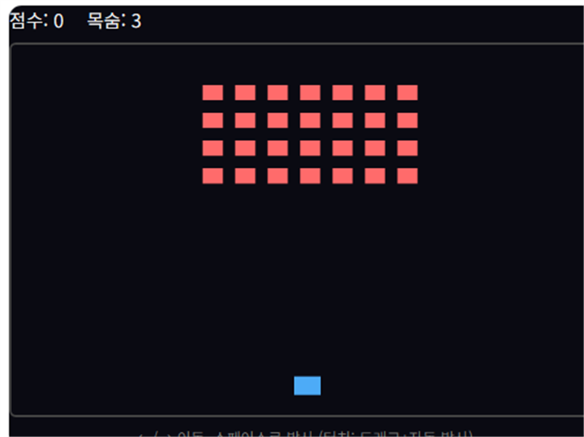

스페이스 슈터는 우주선을 좌우로 이동시키며 총알을 발사해 위에서 내려오는 적을 격추하는 세로 스크롤 슈팅 게임입니다.
기본 규칙
- ← / → 방향키(또는 터치 드래그)로 우주선을 좌우로 이동합니다.
- 자동 또는 스페이스바/클릭으로 총알을 발사해 적을 격추합니다.
- 적과 충돌하거나 적의 공격에 맞으면 생명이 줄어듭니다.
- 적을 격추할수록 점수가 오르고, 시간이 지날수록 적이 많아집니다.
고득점 팁
1. 화면 하단, 안전지대를 확보하세요
화면 가장자리보다 하단 중앙 부근에 머무르면 좌우 어느 쪽에서 적이 나타나도 대응할 시간을 더 벌 수 있습니다.
2. 밀집한 적 무리부터 우선 처리하세요
적이 몰려 있는 구간을 방치하면 이후 화면이 더 복잡해집니다. 몰려 있는 적을 먼저 정리해서 화면을 여유 있게 유지하는 것이 생존에 유리합니다.
직접 플레이해보고 싶다면 여기서 바로 시작할 수 있습니다.